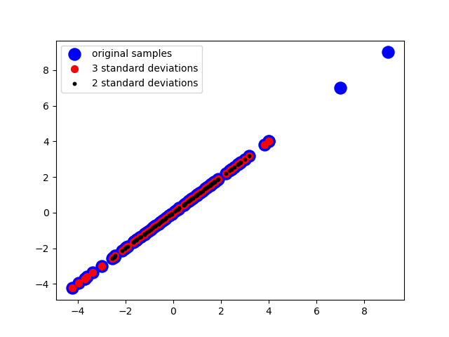

Outlier removal#
- cleansing.outlier_removal.run(data, ref, max_std_dist=2, min_samp_cnt=5, axis=0)#
Removes any sample more distant from the mean than max_std_dist standard deviations. Terminates if either all samples are within the threshold or if the minimal sample count defined by min_samp_cnt is reached.
- Parameters
data – Input data.
ref – Single dimensional reference data.
maxStdDist – Threshold for outlier detection. Number of standard deviations permissible.
min_samp_cnt – Minimal viable sample count. Terminates if reduced below this number or the current iteration would reduce below this number.
axis – Axis on which to evaluate the data object
- Returns
Filtered array without outlier more different than n standard deviations.
The following code example shows how to apply statistical outlier removal.
import numpy as np
import random
import matplotlib
matplotlib.use("Qt5agg")
import matplotlib.pyplot as plt
import finn.cleansing.outlier_removal as om
def main():
#Configure sample data
channel_count = 32
data_range = 100
#Configure niose
noise_count = int(data_range * 0.05)
#Generate sample data
raw_data = [None for _ in range(channel_count)]
for ch_idx in range(channel_count):
raw_data[ch_idx] = np.random.normal(0, 2, data_range)
for noise_idx in [random.randint(0, data_range - 1) for _ in range(noise_count)]:
raw_data[ch_idx][noise_idx] = np.random.randint(1, 10)
#Filter data
filtered_data_2 = [None for _ in range(channel_count)]
for ch_idx in range(channel_count):
filtered_data_2[ch_idx] = om.run(raw_data[ch_idx], raw_data[ch_idx], max_std_dist = 2, min_samp_cnt = 0)
filtered_data_3 = [None for _ in range(channel_count)]
for ch_idx in range(channel_count):
filtered_data_3[ch_idx] = om.run(raw_data[ch_idx], raw_data[ch_idx], max_std_dist = 3, min_samp_cnt = 0)
#Visualize results
plot_channel_idx = 0
plt.scatter(raw_data[plot_channel_idx], raw_data[plot_channel_idx], color = "blue", label = "original samples", s = 150)
plt.scatter(filtered_data_3[plot_channel_idx], filtered_data_3[plot_channel_idx], color = "red", label = "3 standard deviations", s = 50)
plt.scatter(filtered_data_2[plot_channel_idx], filtered_data_2[plot_channel_idx], color = "black", label = "2 standard deviations", s = 10)
plt.legend()
plt.show(block = True)
main()
Outliers more than more than three (or two) standard deviations may be isolated and removed from the data set.
